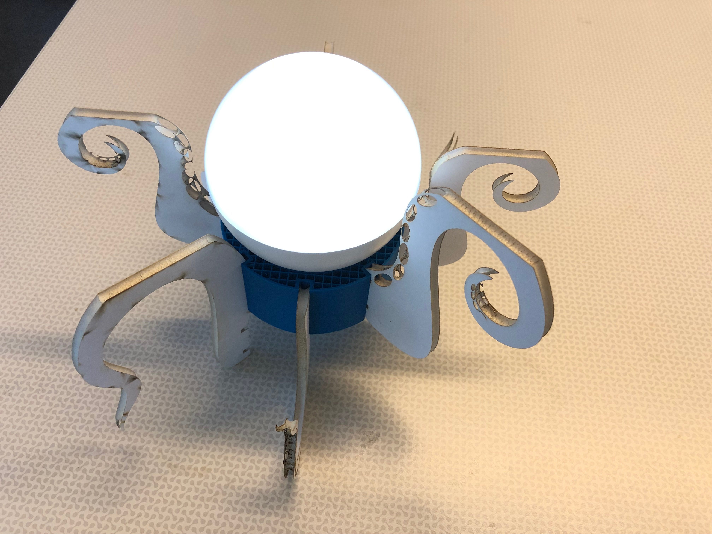
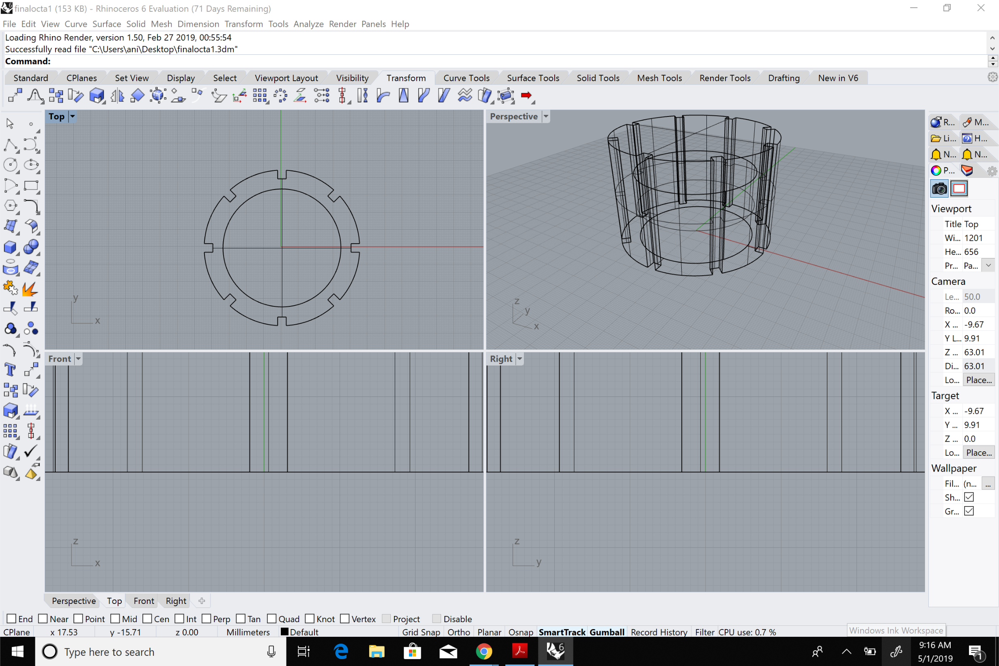
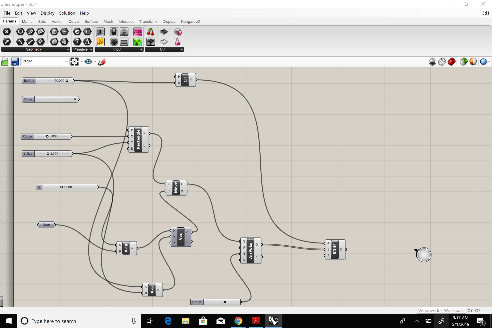
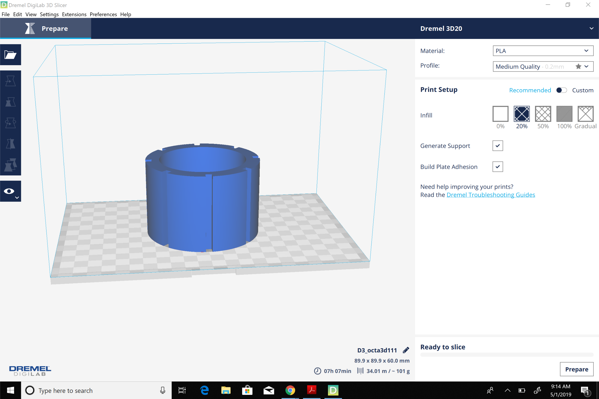
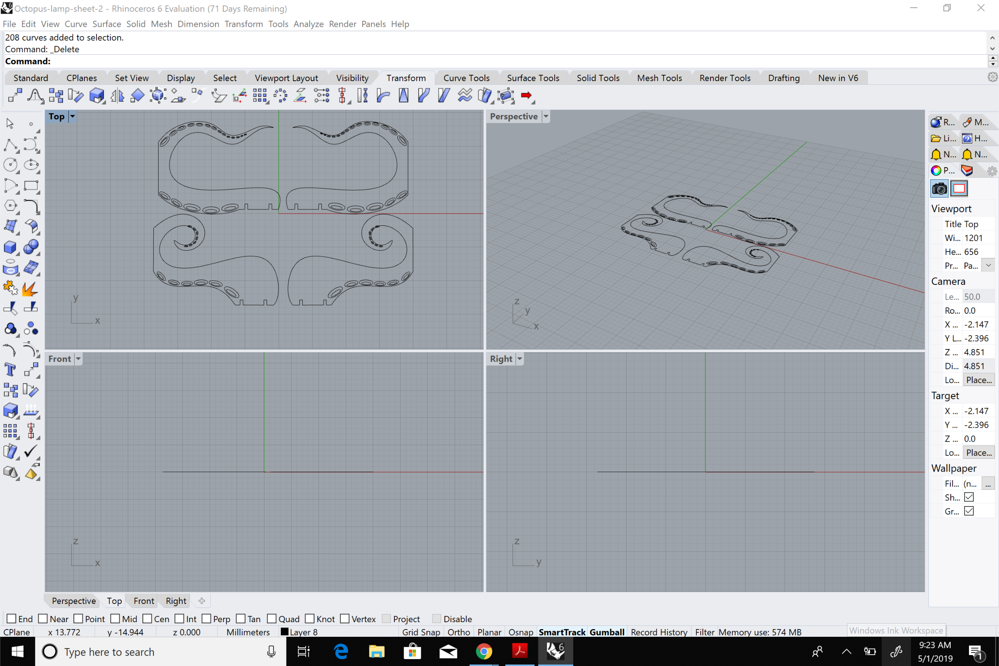
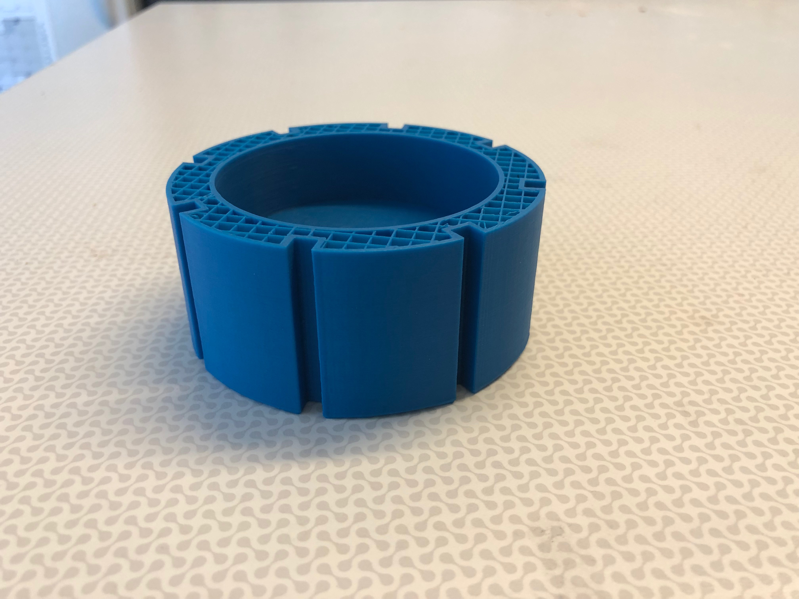
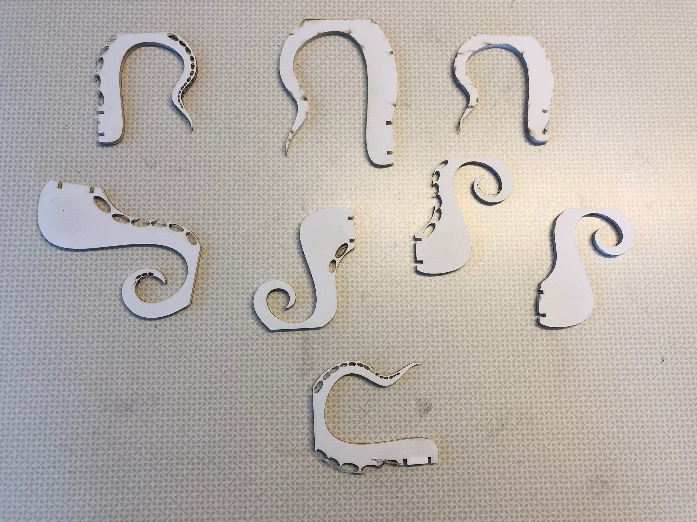
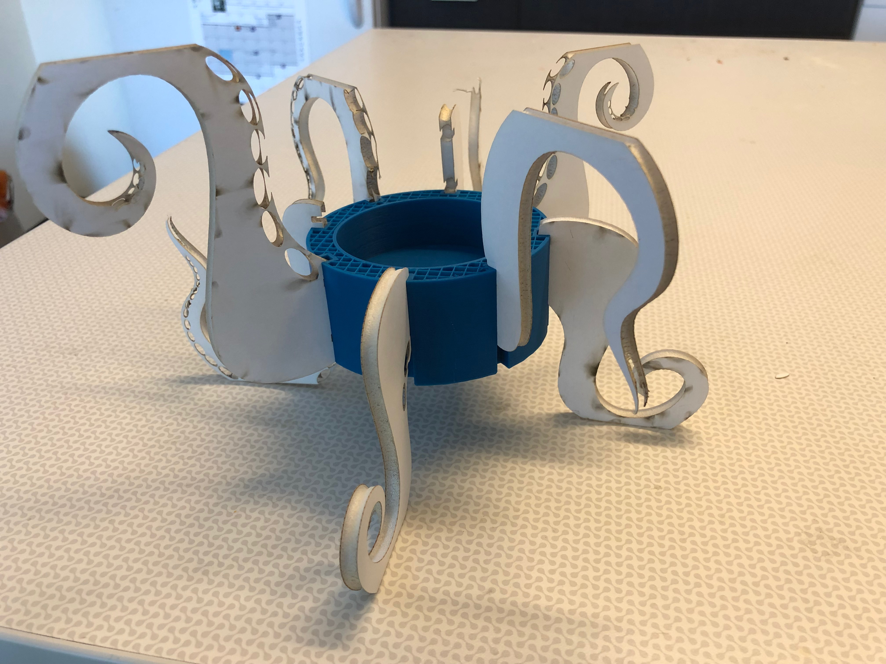
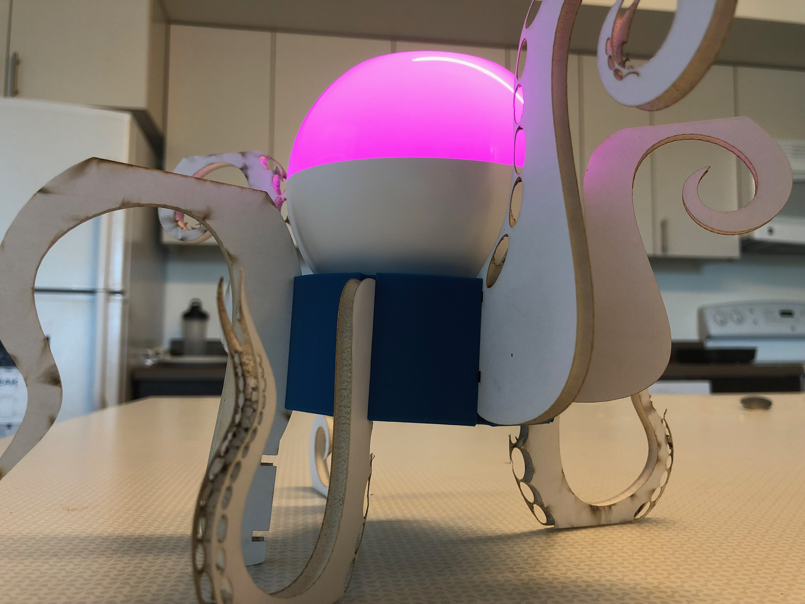
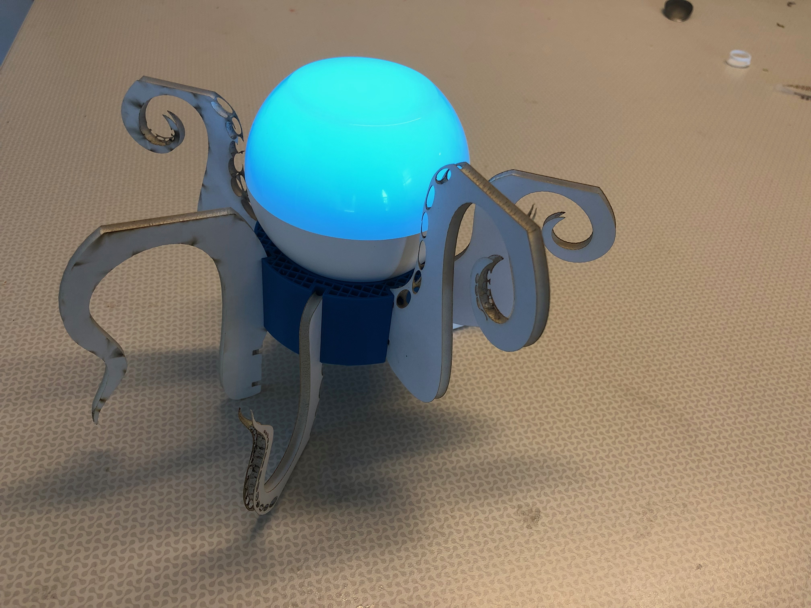

Octopus!!!. leveraging 3D printing and laser cutting, I designed a press-fit modular octopus lamp. The core is a 3D printed cylinder with a semi-hollowed center to accommodate the lamp. The cylinder has notches on the sides to accommodate the laser cut tentacles. The design is modular as the octopus arms can be modified or substituted easily.
Grasshopper was used to generate the base circular geometry in rhino. The program supports adding as many notches as required. The circle was then extruded into a cylinder and a smaller cylinder was extracted from this shape to create the accommodate the lamp. The geometry was then solidified and was exported in STL form. I modified an existing file to create the arms that slide into the cylinder. Foam board was used to create the arms.
  
The parts!!! The cylindrical core is 3d printed with PLA while the arms are laser cut out of foam board.
  
Laser cutter: Vector- Power:90% , Speed 20%.
3D printer: Nozzle temp: 235C, platform temp: 45C, 20% infill
  
Ta-dah!!!!
This concept was inspired by Emma's Polypus design